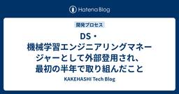
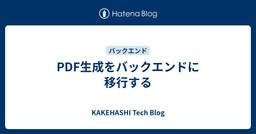
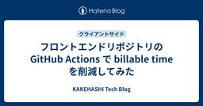
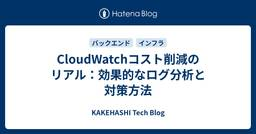
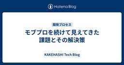
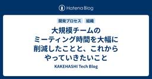
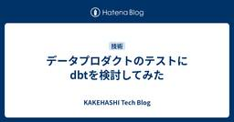
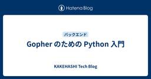

KAKEHASHI Tech Blog
https://kakehashi-dev.hatenablog.com/
カケハシのEngineer Teamによるブログです。
フィード

DS・機械学習エンジニアリングマネージャーとして外部登用され、最初の半年で取り組んだこと 1
1
KAKEHASHI Tech Blog
こちらの記事はカケハシ Advent Calendar 2024の21日目の記事になります。 adventar.org こんにちは、株式会社カケハシのエンジニアリングマネージャーの鳥越です。 本日は、今年の5月にデータサイエンティスト、機械学習エンジニア、ソフトウェアエンジニアの混成チームのエンジニアリングマネージャーとして入社した私の、半年間の取り組みについてのお話しをしていこうと思います。 「機械学習エンジニア」や「データサイエンティスト」は会社によって中身がだいぶ異なると言われますし、事業領域やフェーズ、その際に抱えている課題によっても異なると思いますので、あくまで1ケースとして受け止め…
5時間前

PDF生成をバックエンドに移行する
KAKEHASHI Tech Blog
こちらの記事は カケハシ Advent Calendar 2024 の 20日目の記事になります。 adventar.org こんにちは、カケハシのAI在庫管理チームでフロントエンドエンジニアをしている Nokogiri です。 AI在庫では薬局で利用する伝票のPDFをフロントエンドで出力していたのですが、バックエンドに移行しました。今回はその背景や取り組み内容について紹介します。 はじめに:なぜフロントエンドからバックエンドへPDF生成を移行するのか PDFをフロントエンドで出力するといくつかの問題があります。 サービスとしてユーザーに発行したPDFを保存しているべきだがフロントエンドでPD…
1日前

フロントエンドリポジトリの GitHub Actions で billable time を削減してみた
KAKEHASHI Tech Blog
カケハシの AI 在庫管理でフロントエンド開発を主にしている鳥海 (@toripeeeeee) です。こちらの記事はカケハシ Advent Calendar 2024 の 19 日目の記事になります。 GitHub Actions では実行時間単位で課金されるため、課金対象時間を表す billable time というものがあります。 最近、私が利用しているリポジトリで billable time を削減するために動くことがあったので、そこでの削減に至るまでの取り組みについてご紹介したいと思います。 なぜ billable time 削減に動いたのか？ GitHub Actions では、さま…
2日前

CloudWatchコスト削減のリアル：効果的なログ分析と対策方法 1
KAKEHASHI Tech Blog
こんにちは、AI在庫管理の開発チームでバックエンドエンジニアをしているもっち（@mottyzzz）です。 AI在庫管理では、プロダクトのインフラとしてAWSを使用しています。その中でも特に重要なサービスのひとつがCloudWatchです。システムの監視やログ管理に不可欠なツールとして日々活用していますが、実はAWS利用料の約15%をCloudWatchが占めているという状況でした。 先日コストを確認したところ、ただでさえコストの割合が多かったCloudWatchの利用料が前月比で20%以上増加していることが判明しました。 この傾向が続けば年間で予想以上のコスト増になることが懸念されました。 そ…
3日前

モブプロを続けて見えてきた課題とその解決策
KAKEHASHI Tech Blog
こちらの記事は カケハシ Advent Calendar 2024 の 17日目の記事になります。 adventar.org こんにちは。 AI在庫管理開発チームのエンジニアの大村です。 私たちの開発チームでは、素早く顧客に価値を提供するための手段としてモブプログラミングやペアプログラミング（以下、モブプロ）を積極的に実施しています。 私自身もチームの開発手法に関心があり、昨年のAdvent Calendarでは『フロー効率重視開発のすすめ』という記事を書きました。その中で、モブプロが開発のフロー効率を高める上で効果的であるという話をしました。 あれから一年が経ち、チームの状況が変化する中で見…
4日前

大規模チームのミーティング時間を大幅に削減したことと、これからやっていきたいこと 46
KAKEHASHI Tech Blog
こちらの記事は カケハシ Advent Calendar 2024 の 16日目の記事になります。 adventar.org こんにちは！エンジニアリングマネージャー（以下、EM）の小田中（@dora_e_m）です。11月より、新規プロダクト開発を主なミッションとするチーム"yabusame"に加え、Musubi AI在庫管理を開発するチーム"hakari"のEMを担当しています。 この記事では、hakariチームにジョインしてから取り組んだミーティング削減施策の狙い、実施までの進め方、効果、そしてこれからやっていきたいことについて紹介します。 hakariのチーム構成 まず、ミーティング削減…
5日前

データプロダクトのテストにdbtを検討してみた 1
KAKEHASHI Tech Blog
こちらの記事はカケハシ Advent Calendar 2024の15日目の記事になります。 こんにちは、株式会社カケハシのソフトウェアエンジニアの坂本です。 現在データプロダクトの開発に関わっており、データの品質チェックに課題を感じています。 この課題に対して、dbtというツールを活用できないか検討してみたのでその検討内容を紹介させていただきたいと思います。 課題背景 現在携わっているデータプロダクトでは、データ基盤に存在しているテーブルのデータを抽出、変換してCSVとして出力し外部提供する処理が存在します。 なお、このプロダクトで参照しているテーブルは各プロダクトで保存しているものをデータ…
6日前

Gopher のための Python 入門 2
KAKEHASHI Tech Blog
AI在庫管理の開発チームでバックエンドエンジニアをしている沖（@takuoki）です。AI在庫管理では、サーバーサイドの大部分で Python を使用しているため、私も毎日 Python をごりごり書いています。ただ、私が Python をちゃんと触り始めたのは、カケハシに入社した 1 年半前で、それまでは主に Go を書いていました。 Go の方が後発の言語のため、Pythonista が Gopher になったという記事の方が簡単に見つかるのですが、ここでは逆に「Gopher のための Python 入門」みたいなものに挑戦してみようかなと思っています。入門といいつつも、今回は、私が実際に…
7日前

再現性ある介入効果検証に向けて、さまざまなバイアスや課題に立ち向かった話
KAKEHASHI Tech Blog
カケハシでデータサイエンティストをしている島吉です。こちらの記事は カケハシ Advent Calendar 2024 の13日目の記事になります。 adventar.org カケハシでは薬局向けプロダクトをベースとした新規事業を進めています。新規事業の効果を定量的に示すために、データサイエンティストが複数のチームと連携し、効果検証ロジックの構築から型化に取り組んできました。今回、データアナリスト・医学研究チーム・ビジネスチームと連携することで、医学的かつ統計的に妥当性が高いロジックを構築するとともに、ビジネス活用において再現性が高いロジックの型化を実現しましたので、その事例を紹介します。 効…
8日前
APE(Automatic Prompt Engineer)を使ったプロンプト自動生成の試み
KAKEHASHI Tech Blog
こちらの記事は カケハシ Advent Calendar 2024 の 12日目の記事になります。 adventar.org 背景・目的 カケハシでは、最新の生成AI技術を活用したプロダクト開発を進めています（プレスリリース）。特に、プロンプトエンジニアリングは生成AIの性能を最大限に引き出すための重要な要素です。しかし、プロンプトを書く作業は非常に手間がかかり、試行錯誤が必要です。そこで、私たちはプロンプトを自動生成する革新的な手法であるAPE(Automatic Prompt Engineer)を導入し、その効果を検証することにしました。 APEを使うことで、プロンプト作成の効率を大幅に向…
9日前
品質要件が厳しい需要予測モデルにおいて、顧客要望起点の改善で重要だったポイント
KAKEHASHI Tech Blog
こちらの記事は カケハシ Advent Calendar 2024 の11日目の記事になります。 こんにちは。Musubi AI在庫管理の開発を担当している機械学習エンジニアの木村です。 この記事では今年に実施した予測アルゴリズムの改善の取り組みの中で重要だったと思うポイントについて紹介したいと思います。 技術的な話は割愛して取り組みそのものに焦点を当てて書いていきます。 背景 AI在庫管理では日々数百万件にのぼる薬の需要予測を行っています。また薬を処方する病院、薬局、患者さん、薬の種類の違いなどによって来局の間隔や処方量のパターンもさまざまで、すべての予測で理想的な結果を出すことはとても難し…
10日前
SELECTでデッドロック発生！？メタデータロックによるデッドロックにご用心
KAKEHASHI Tech Blog
この記事は カケハシ Advent Calendar 2024 の 10日目の記事です。 adventar.org AI在庫管理というプロダクトチームのソフトウェアエンジニアをしている金子です。 今回は本番環境で発生したデッドロックをきっかけに、その原因に関する調査結果と対策についてまとめていきます。 本番環境で Query 実行中にデッドロック 事象 まずは実際に発生した事象についてです。 いつも通りリリース作業を実施していた時のことでした。リリース内容はレコードの無い不要になったテーブルの削除。そのテーブルに対する参照箇所が無いことは確認済みで、メンテナンスモードなどの対応は不要で、通常の…
11日前
エンジニア主体で回すスクラム！
KAKEHASHI Tech Blog
こちらの記事は カケハシ Advent Calendar 2024 の 9日目の記事になります。 adventar.org こんにちは、プラットフォームドメインでエンジニアをしている石黒です🎅🎁 ついこの前いつになったら夏が終わるのかと嘆いていた気がしますが、もうすぐ今年が終わりますね。 今回は、バックエンドエンジニア目線で、私達のチームの開発フローと運用上工夫していることをご紹介します。 チーム構成は以下の通りで、エンジニアリングマネージャーがセレモニーの取りまとめをしてくれますが、主務としてのスクラムマスターはいません。 エンジニアリングマネージャー1名 プロダクトマネージャー2名 デザイ…
12日前
社会人歴15年を超えて、日報を書くことの重要性を再認識した件
KAKEHASHI Tech Blog
こちらの記事はカケハシ Advent Calendar 2024の8日目の記事になります。 こんにちは、株式会社カケハシのデータサイエンティストの保坂です。 最近色々なことが重なって日報を書き始めたのですが、やったことがほかの人に見える様になるだけではなく自分自身の日々の活動を振り返ることにもとても有用だと実感したので、なぜそう感じたのかを紹介させていただきたいと思います。 日報を始めた動機 お恥ずかしい話ですが、私はもうここ10年近く、日記や日報など、日々の活動を記録したり共有したりすることをやっていませんでした。 社会人になってしばらくの間は、好きなエディタを使ってとりとめもなく考えたこと…
13日前
薬局業務向けの音声認識エンジンの評価・選定基準
KAKEHASHI Tech Blog
こちらの記事は Advent Calendar 2024 の 7日目の記事になります。 adventar.org 生成AI研究開発チームのainoyaです。 カケハシでは生成AIを使った更なる薬局業務DXに挑戦しています カケハシでは、生成AIを活用した薬局業務効率化の機能として、薬剤師の音声メモもしくは薬剤師との患者の音声データを文字起こしし、生成AIを使用して薬歴を自動生成するソリューションを現在開発しています。この機能が本当に業務の効率化をもたらすことができるかどうかは、医療用語を含む会話音声が正しく文字起こしできるかがとても重要なポイントです。今回の記事では、 Amazon Trans…
14日前
【Node.js】S3からS3へのアップロードをnode:stream/promisesのpipelineやaws-sdk/lib-storageでやる
KAKEHASHI Tech Blog
はじめに こちらの記事は Advent Calendar 2024 の 6日目の記事になります。 カケハシでソフトウェアエンジニアをしている加藤です。 この記事では、S3からS3へのファイルのアップロードをNode.js, TypeScript, Stream APIを利用して行う方法について説明します。 背景 S3にあるファイルを取得して後続処理で利用しやすい形にフォーマットを変換して別のS3へ保存したいということはよくあることかと思います。 例えば、CSVファイルを取得してJSONに変換してS3に保存するといった処理です。 まず思いつくのは S3からファイルをダウンロード ローカルに保存し…
15日前
新規事業Analyticsチームにおける2024年の品質担保・業務最適化に向けた取り組み
KAKEHASHI Tech Blog
こちらの記事は カケハシ Advent Calendar 2024 の5日目の記事になります。 adventar.org 1.はじめに 2.Patient Engagement事業とは 3.Analyticsチームについて 4.当時の課題 ①KPIの設定が最適化されていなかった ②様々な施策や試みの運用が属人化していることがあった 5.そこで、我々が実施したこと ①KPIの深堀・検討 ②適切なKPIをどういうロジックで算出するかを決める ③プロジェクト運用のガイドライン作成 ④プロジェクト振り返りの開始 6.おわりに 1.はじめに はじめまして。カケハシの新田です。 カケハシでの新たなプロジェ…
16日前
「データの力で医療体験を変えていく」カケハシのデータ基盤を支えるエンジニアたちの志
KAKEHASHI Tech Blog
カケハシには、あらゆるプロダクトのデータ活用を一手に担う、データ基盤のスペシャリストチームが存在します。今回は、チームの中核となる3人のエンジニアに、「入社の決め手」「入社後の衝撃」「今後の展望」そして「求めるエンジニア像」を語ってもらいました。 事業・領域によって、扱うことのできるデータはさまざま。特に「自分の仕事が社会の何に貢献しているのか」「その課題解決が誰の役に立っているのか」モヤモヤを抱えているエンジニアの方にお届けしたい記事なりました。ぜひご一読を！ きっかけは「データを活用して世の中の役に立ちたい」という想い データチーム / Engineering Manager / 松田健司…
18日前
S3 イベント通知とオブジェクトのストレージクラス変更で発生する CopyObject イベントについて
KAKEHASHI Tech Blog
処方箋データ基盤チームでエンジニアをしている岩佐 (孝浩) です。 カケハシには「岩佐」さんが複数名在籍しており、社内では「わささん」と呼ばれています。 私が所属する処方箋データ基盤チームは、日本全国の薬局から送信される処方箋データを S3 に保存しています。 今後ストレージコストの増加が予測されるため、S3 ライフサイクル・ルールを利用してストレージクラスを変更することにしました。 この S3 バケットには EventBridge 通知が設定されており、ふと、「ストレージクラスの変更でイベントが発生するのでは」と気になりました。 結論として、ストレージクラスを変更すると、CopyObject…
18日前
カケハシの生成AIプロダクトのプロダクトポリシーを公開します
KAKEHASHI Tech Blog
こちらの記事は カケハシ Advent Calendar 2024 の 2日目の記事になります。 adventar.org こんにちは。カケハシでプロダクトマネージャーをしている高梨です。 私は今生成AIを活用した薬局向けの医療アプリケーション開発に取り組んでおり、先日横浜で開催された第18回日本薬局学会学術総会（NPha） でもプロトタイプを初お披露目させていただきました。 カケハシで生成AIのプロダクトを開発するのはこの取り組みが初めてだったため、プロトタイプの開発にあたっては、事前にさまざまな本や資料で生成AIプロダクトの原理原則やプラクティスを調査したり、開発を進めながらプロダクトポリ…
19日前
PMF後にありがちな「何のためのプロダクト？問題」を解決したのは、North Star Metric だった
KAKEHASHI Tech Blog
こんにちは！ 「Musubi AI在庫管理」（AI在庫管理）プロダクトマネージャーをしている山田です。 突然ですが、機能追加や改修が続き、そのプロダクトが「誰に、どんな価値を提供するものなのか」、曖昧になっている状況にモヤモヤを感じたことはありませんか？ その課題、「North Star Metric」（NSM）という指標を定めることで解決できるかもしれません。今回は、私たちが一年近くの時間をかけて取り組んだNSMの取り組みを具体的なエピソードを踏まえてご紹介したいと思います。チームの規模が拡大し、メンバー間の目線合わせや一体感に課題を感じている方の参考になってくれると嬉しいです。 そもそもN…
22日前
TSKaigi Kansai 2024 登壇・協賛レポート
KAKEHASHI Tech Blog
カケハシで技術広報を担当している櫛井です。カケハシは2024年11月16日(土)に開催されたTSKaigi Kansai 2024にて、Goldスポンサーを務めました。また、カケハシのエンジニアがランチタイムのスポンサーLTで登壇いたしました。kansai.tskaigi.org こちらのエントリでは、当日の会場での様子やセッション資料を基に雰囲気をお伝えします。 会場は京都市勧業館みやこめっせ。平安神宮のすぐそばにある広々とした会場で、とても雰囲気の良い場所でした。 会場の様子 京都で400名規模の技術イベントはなかなか珍しいとのことで、沢山の参加者が来場されました。 カケハシが実施したスポ…
1ヶ月前
AWS Client VPN で API Gateway Private REST API にアクセスする方法
KAKEHASHI Tech Blog
処方箋データ基盤チームでエンジニアをしている岩佐 (孝浩) です。 カケハシには「岩佐」さんが複数名在籍しており、社内では「わささん」と呼ばれています。 先日、社外のオンプレミス環境から API Gateway Private REST API にアクセスしたいという要件を検証する機会がありましたので、備忘録も兼ねて紹介します。 この投稿では、どのような AWS リソースを作成しているのかを、ステップごとに確認しながら進めていきます。 まずは AWS CLI で構築を行い、最後に AWS CDK のコードを掲載します。 AWS 構成 クライアント認証 AWS リソース VPC Internet…
1ヶ月前
さまざまな業界で経験を積んだエンジニアたちは、なぜカケハシを選んだのか
KAKEHASHI Tech Blog
『Musubi』は薬剤師の業務効率化に加え、服薬指導のサポート、各種データの見える化、アプリによる服薬フォローや来局促進など、さまざまなアプローチで薬局のDXを推進している電子薬歴システムで、カケハシの主力サービスです。 今回はMusubi開発チームのメンバーが「なぜ医療、薬局・薬剤師という専門領域へ飛び込んだのか」「エンジニアがどのような点にやりがいを感じているのか」といった話題から、入社後の苦労まで赤裸々に語りました。ぜひ最後までご覧ください！ （文中に登場する久保田はリモートでの参加となりました） カケハシで活躍するエンジニアたちのバックグラウンドは？ Musubi開発チームのマネージャ…
1ヶ月前
zustand v5へのアップデートと reselectの導入
KAKEHASHI Tech Blog
こんにちは、カケハシのAI在庫管理チームでフロントエンドエンジニアをしている Nokogiri です。今回は、AI在庫で利用している zustand をv4系からv5系にアップデートした際に、reselect を導入した理由と、その経緯について説明します。 zustand導入の経緯 zustand導入の経緯や活用法に関しては以下の記事をご覧ください。 v5で何が変わったか？ 変更点はいくつかあります。 デフォルトのエクスポートの削除 非推奨の機能の削除 React 18 を最低限必要なバージョンにする React.useSyncExternalStore にピュアに依存するようになる などなど…
2ヶ月前
Google Docsでイベント配布用冊子の組版データを作成する技術
KAKEHASHI Tech Blog
技術広報の941です。この記事では、イベントで配布するための冊子を印刷するためのデータ(組版といいます)を、Google Docsで作成する際に気をつけるべきポイントについて共有したいと思います。
3ヶ月前
医療における生成AIアプリケーションの精度評価
KAKEHASHI Tech Blog
こんにちは。カケハシでプロダクトマネージャーをしている高梨です。私は今生成AIを活用した薬局向けの医療アプリケーション開発に取り組んでおり、今回は生成AI医療アプリケーションのPRDをまとめる上でも特に特徴的だった精度要件（品質評価要件）に関して書こうと思います 。
3ヶ月前
AWSの設定値保存：最適な方法を選ぶためのガイド
KAKEHASHI Tech Blog
Musubi AI 在庫管理で DevOps エンジニアをしている kacky です。Web アプリケーションの開発において、設定値の管理は避けて通れない課題です。データベース接続情報や 機能フラグなど、アプリケーションの挙動を左右する重要な情報を安全かつ効率的に扱う必要があります。AWS では、設定値の保存に利用できるサービスがいくつか存在します。本稿では、特に S3, AppConfig, Parameter Store の 3 つに焦点を当て、それぞれのメリット・デメリットを比較し、最適な設計を選択するための決定法を紹介します。
3ヶ月前
Gitのコミットログから開発属人性を定量化する方法と品質向上への活用事例
KAKEHASHI Tech Blog
AI在庫管理の開発チームのバックエンドエンジニアのもっち(@mottyzzz)です。今回は、AI在庫管理の開発において、Gitのコミットログから開発属人性を可視化して品質向上を実施していく箇所の優先順位をつけた事例を紹介します。
3ヶ月前
Flutter Widget Book で UIコンポーネントの管理
KAKEHASHI Tech Blog
はじめに Flutter開発において、UIコンポーネントの管理は常に大きな課題です。複数の画面サイズへの対応、ダークモードと通常モードの切り替え、多言語対応、コンポーネントの一貫性維持、そしてデザイナーとの効率的な協業など、様々な問題に直面します。これらの課題に対して、WebフロントエンドではStorybookが広く採用されていますが、Flutterエコシステムでは、Widgetbookが注目を集めています。 この記事は秋の技術特集 2024の 14 記事目です。 はじめに Widgetbookとは 導入方法 プロジェクト構成 パッケージの追加 lib/main.dartの修正 Widgetの…
3ヶ月前